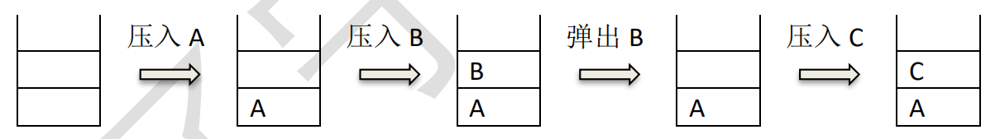

一、单项选择题(共15题，每题2分，共计30分；每题有且仅有一个正确选项)
| 1. | 以下哪一种设备属于输出设备（） |
|---|
| 2. | 下列四个不同进制的数中，与其它三项数值上不相等的是（ ）。 |
|---|
| 3. | 1MB 等于（ ）。 |
|---|
| 4. | 广域网的英文缩写是（ ）。 |
|---|
| 5. | 中国计算机学会于（ ）年创办全国青少年计算机程序设计竞赛。 |
|---|
| 6. | 如果开始时计算机处于小写输入状态，现在有一只小老鼠反复按照CapsLock、 字母键 A、字母键 S、字母键 D、字母键 F 的顺序循环按键，即 CapsLock、A、S、D、F、CapsLock、A、S、D、F、……，屏幕上输出的第 81 个字符是字母（ ）。 |
|---|
| 7. | 根节点深度为 0，一棵深度为 h 的满 k（k>1）叉树，即除最后一层无任何子节点外，每一层上的所有结点都有 k 个子结点的树，共有（ ）个结点。 |
|---|
| 8. | 以下排序算法中，不需要进行关键字比较操作的算法是（ ）。 |
|---|
| 9. | 给定一个含 N 个不相同数字的数组，在最坏情况下，找出其中最大或最小的 数，至少需要 N - 1 次比较操作。则最坏情况下，在该数组中同时找最大与 最小的数至少需要（ ）次比较操作。（⌈ ⌉表示向上取整，⌊ ⌋表示向下取整） |
|---|
| 10. | 下面的故事与（ ）算法有着异曲同工之妙。 从前有座山，山里有座庙，庙里有个老和尚在给小和尚讲故事：“从前有座山，山里有座庙，庙里有个老和尚在给小和尚讲故事：‘从前有座山，山里有座庙，庙里有个老和尚给小和尚讲故事……’” |
|---|
| 11. | 由四个没有区别的点构成的简单无向连通图的个数是（ ）。 |
|---|
| 12. | 设含有 10 个元素的集合的全部子集数为 S，其中由 7 个元素组成的子集数为T，则 T / S 的值为（ ）。 |
|---|
| 13. | 10000 以内，与 10000 互质的正整数有（ ）个。 |
|---|
| 14. |
为了统计一个非负整数的二进制形式中 1 的个数，代码如下：
int CountBit(int x)
{
int ret = 0;
while (x)
{
ret++;
___________;
}
return ret;
}
则空格内要填入的语句是（ ）。
|
|---|
| 15. |
下图中所使用的数据结构是（ ）。  |
|---|
二、问题求解(共2题，每题5分，共计10分)
| 1. | 甲乙丙丁四人在考虑周末要不要外出郊游。已知①如果周末下雨，并且乙不去，则甲一定不去；②如果乙去，则丁一定去；③如果丙去，则丁一定不去；④如果丁不去，而且甲不去，则丙一定不去。如果周末丙去了，则甲（去了/没去），乙（去了/没去），丁（去了/没去），周末（下雨/没下雨）(2 分)。 |
|---|
| 2. | 从 1 到 2018 这 2018 个数中，共有个包含数字 8 的数。包含数字 8 的数是指有某一位是“8”的数， 例如“2018”与“188”。 |
|---|
三、阅读程序写结果(共4题，每题8分，共计32分)
| 1. |
#include <cstdio>
char st[100];
int main() {
scanf("%s", st);
for (int i = 0; st[i]; ++i) {
if ('A' <= st[i] && st[i] <= 'Z')
st[i] += 1;
}
printf("%s\n", st);
return 0;
}
|
|---|---|
| 输入：QuanGuoLianSai | |
| 输出： |
| 2. |
#include <cstdio>
int main() {
int x;
scanf("%d", &x);
int res = 0;
for (int i = 0; i < x; ++i) {
if (i * i % x == 1) {
++res;
}
}
printf("%d", res);
return 0;
}
|
|---|---|
| 输入：15 | |
| 输出： |
| 3. |
#include <iostream>
using namespace std;
int n, m;
int findans(int n, int m) {
if (n == 0) return m;
if (m == 0) return n % 3;
return findans(n - 1, m) - findans(n, m - 1) + findans(n - 1, m - 1);
}
int main(){
cin >> n >> m;
cout << findans(n, m) << endl;
return 0;
}
|
|---|---|
| 输入：5 6 | |
| 输出： |
| 4. |
#include <cstdio>
int n,d[100];
bool v[100];
int main() {
scanf("%d", &n);
for (int i = 0; i < n; ++i) {
scanf("%d", d + i);
v[i] = false;
}
int cnt = 0;
for (int i = 0; i < n; ++i) {
if (!v[i]) {
for (int j = i; !v[j]; j = d[j]) {
v[j] = true;
}
++cnt;
}
}
printf("%d\n", cnt);
return 0;
}
|
|---|---|
| 输入：10 7 1 4 3 2 5 9 8 0 6 | |
| 输出： |
四、完善程序(共2题，每题14分，共计28分)
| 1. |
（最大公约数之和）下列程序想要求解整数𝑛的所有约数两两之间最大公约数的和对10007求余后的值，试补全程序。（第一空 2 分，其余 3 分） 举例来说，4的所有约数是1,2,4。1和2的最大公约数为1；2和4的最大公约数为2；1和4的最大公约数为1。于是答案为1 + 2 + 1 = 4。 要求 getDivisor 函数的复杂度为𝑂(√𝑛)，gcd 函数的复杂度为𝑂(log max(𝑎, 𝑏))。 |
|---|
#include <iostream>
using namespace std;
const int N = 110000, P = 10007;
int n;
int a[N], len;
int ans;
void getDivisor() {
len = 0;
for (int i = 1; <= n; ++i)
if (n % i == 0) {
a[++len] = i;
if ( != i) a[++len] = n / i;
}
}
int gcd(int a, int b) {
if (b == 0) {
;
}
return gcd(b, );
}
int main() {
cin >> n;
getDivisor();
ans = 0;
for (int i = 1; i <= len; ++i) {
for (int j = i + 1; j <= len; ++j) {
ans = ( ) % P;
}
}
cout << ans << endl;
return 0;
}
|
| 2. |
对于一个1到n的排列P（即1到n中每一个数在P中出现了恰好一次），令q为第i个位置之后第一个比Pi值更大的位置，如果不存在这样的位置，则qi = n +1。 举例来说，如果n = 5且P为1 5 4 2 3，则q为2 6 6 5 6。 下列程序读入了排列P，使用双向链表求解了答案。试补全程序。（第二空2 分，其余 3 分） 数据范围 1 ≤ n ≤ 105。 |
|---|
#include <iostream>
using namespace std;
const int N = 100010;
int n;
int L[N], R[N], a[N];
int main() {
cin >> n;
for (int i = 1; i <= n; ++i) {
int x;
cin >> x;
;
}
for (int i = 1; i <= n; ++i) {
R[i] = ;
L[i] = i - 1;
}
for (int i = 1; i <= n; ++i) {
L[ ] = L[a[i]];
R[L[a[i]]] = R[ ];
}
for (int i = 1; i <= n; ++i) {
cout << << " ";
}
cout << endl;
return 0;
}
|